チュートリアル
RDSを2つ登録し、リソースを1つミラーして詳細を確認するまで — 実際の画面で辿る
RDSを2つ登録し、リソースを1つミラーして詳細を確認するまで — 実際の画面で辿る
Flow 01 — 起動直後
起動すると最初に表示されるのがDashboardです。登録済みのRDS、実行中のジョブ、ミラー済みリソース数、プロキシノードの生存状況が一目で分かります。まだ何も登録していない状態からスタートします。
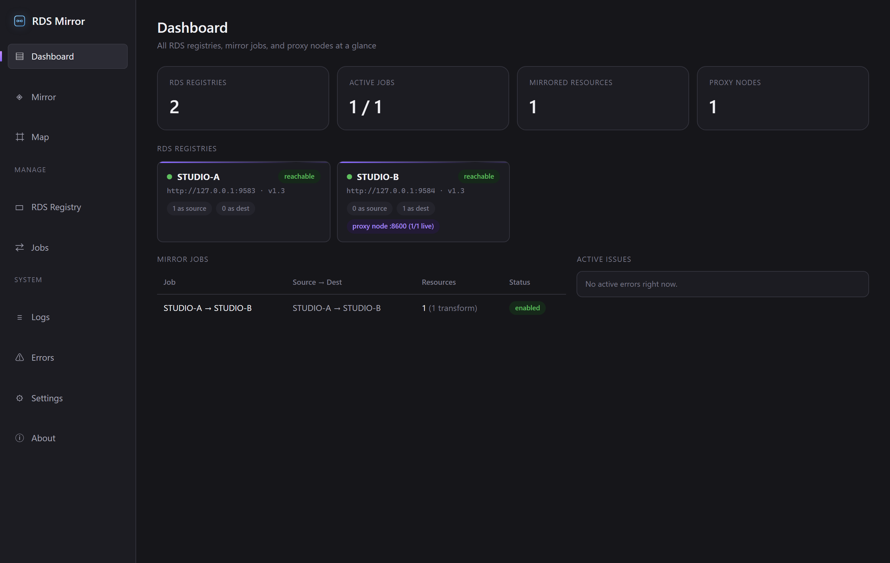
Flow 02 — RDS Registry
左サイドバーの RDS Registry から、ミラーで使う2つのレジストリを登録します。最初はSTUDIO-Aが1件だけ登録されている状態から始め、右上の + Add registry でSTUDIO-Bを追加します。Query API URLとRegistration API URLを入力してSaveするだけです。
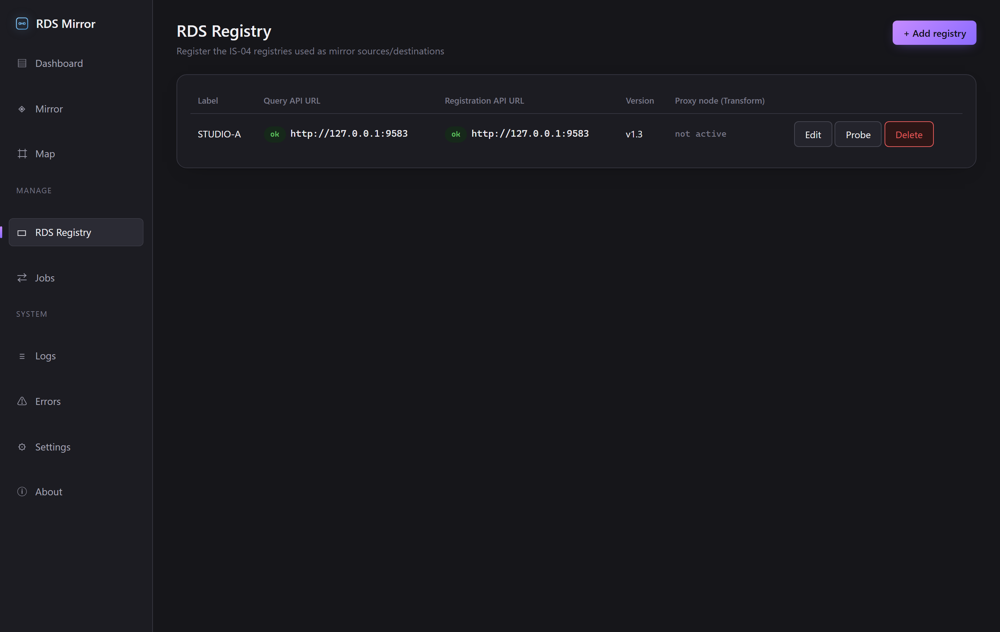
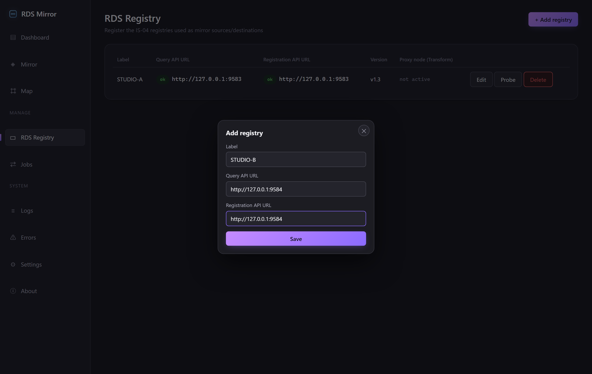
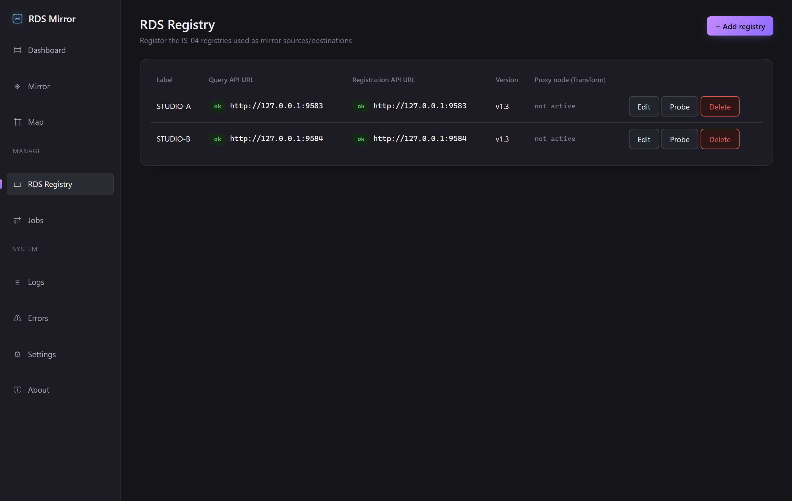
Flow 03 — Mirror workspace
左サイドバーの Mirror へ移動し、SOURCEにSTUDIO-A、DESTINATIONにSTUDIO-Bを選びます。左パネルでコピーしたいsender/receiverをクリックして選択し、中央の Copy selection を押すだけで、同じUUID・同じ構造のまま右側に登録されます。
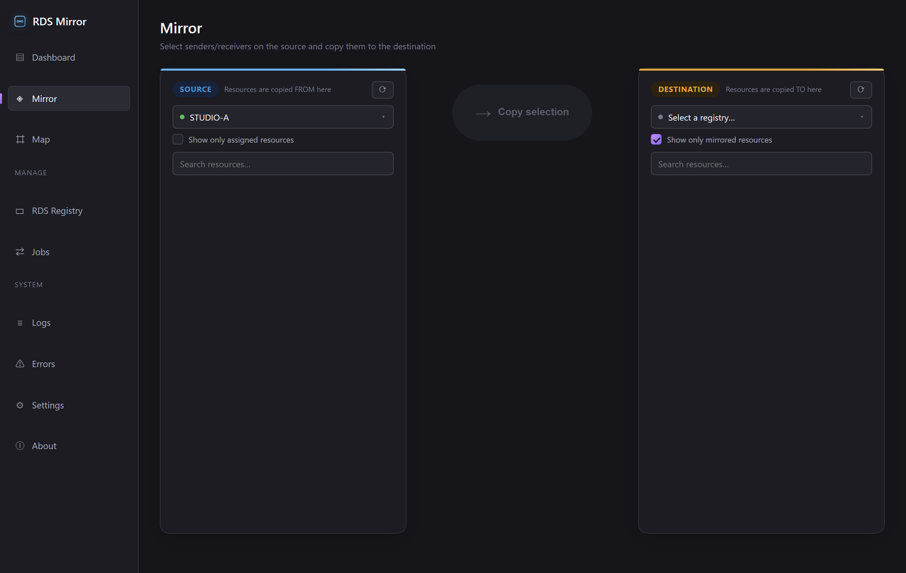
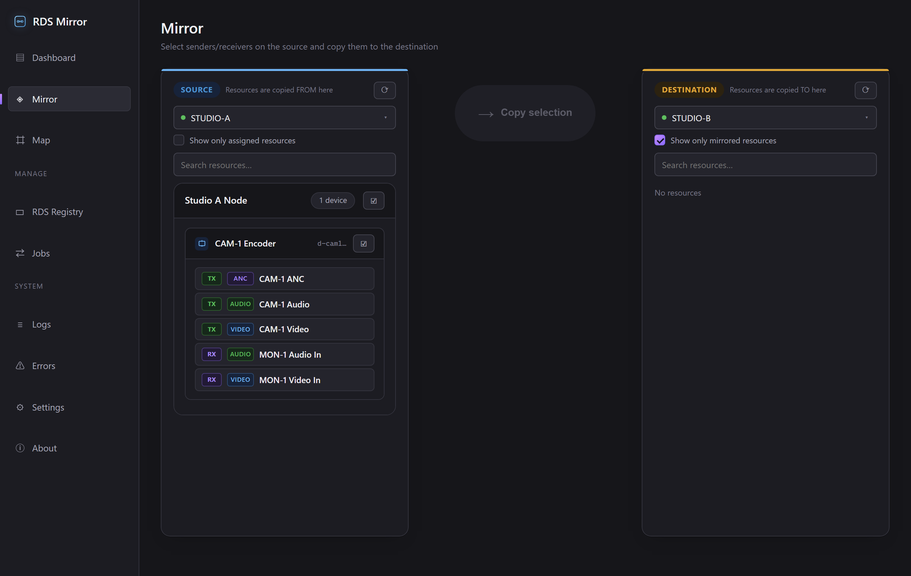
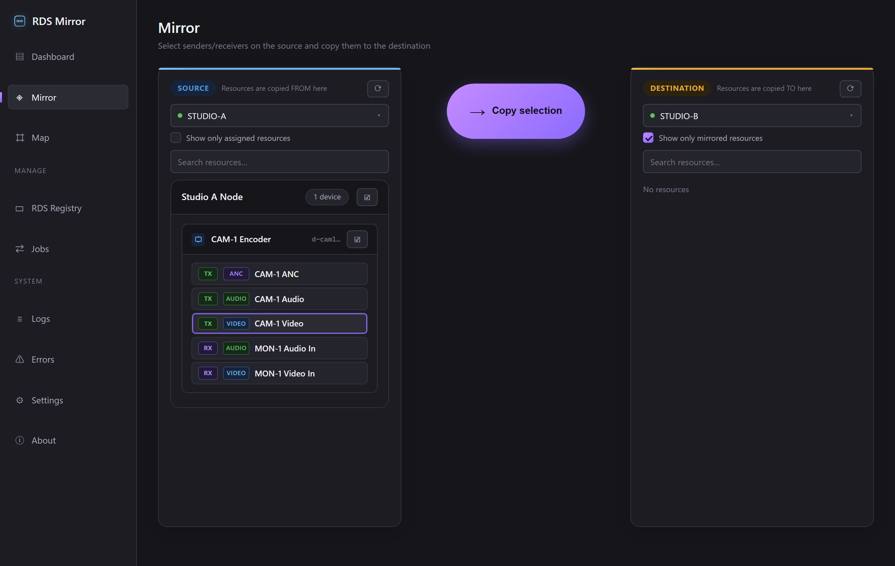
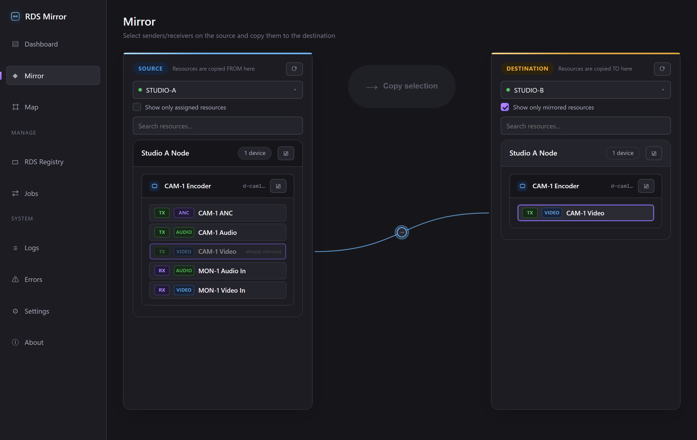
Flow 04 — Transform config
接続線中央のアイコンをクリックすると設定パネルが開きます。Transform タブに切り替え、宛先のDestination(G)にIP/portを入力すると、Preview SDP / active JSON で実際に配信されるSDPとactive JSONを保存前に確認できます。Saveすると、宛先RDS上に専用のプロキシノード経由でリソースが登録されます。
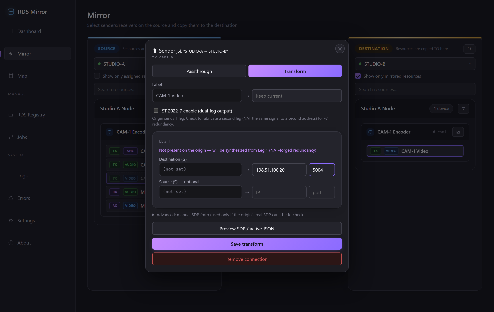
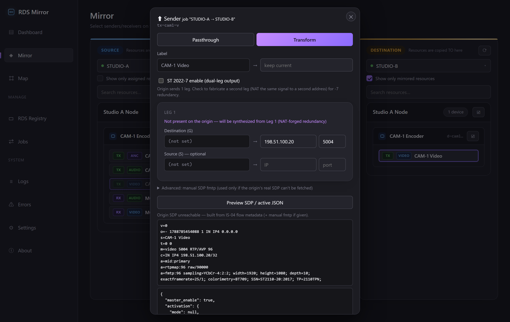
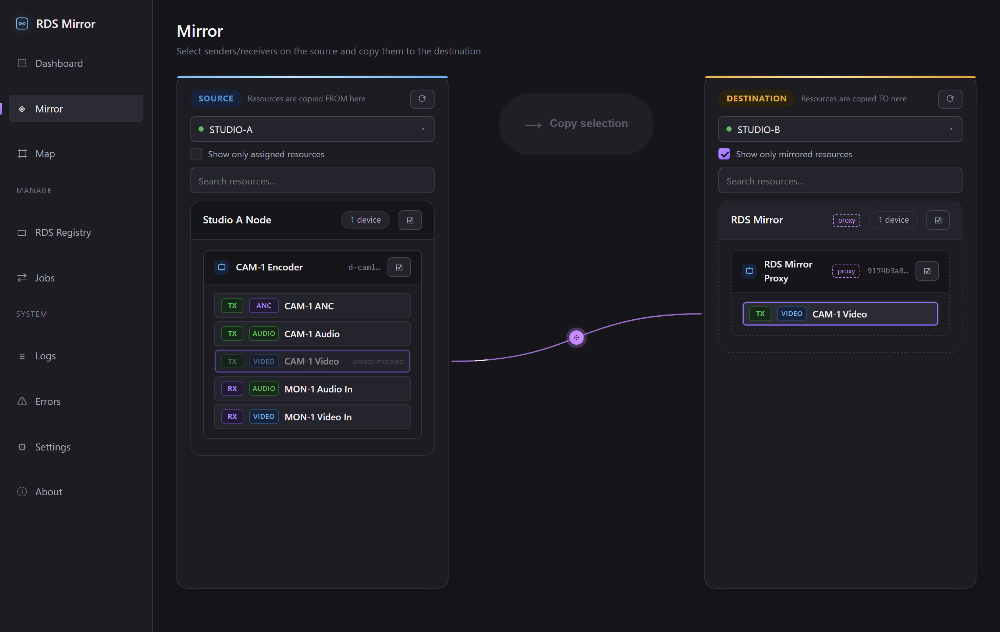
Flow 05 — Resource detail
どのsender/receiverの行もダブルクリックすると詳細モーダルが開きます。それがネイティブに登録されたものか、他のRDSからミラーされてきたものか(どのジョブ経由・元のIDは何か)がバッジで分かり、生のJSONも確認できます。
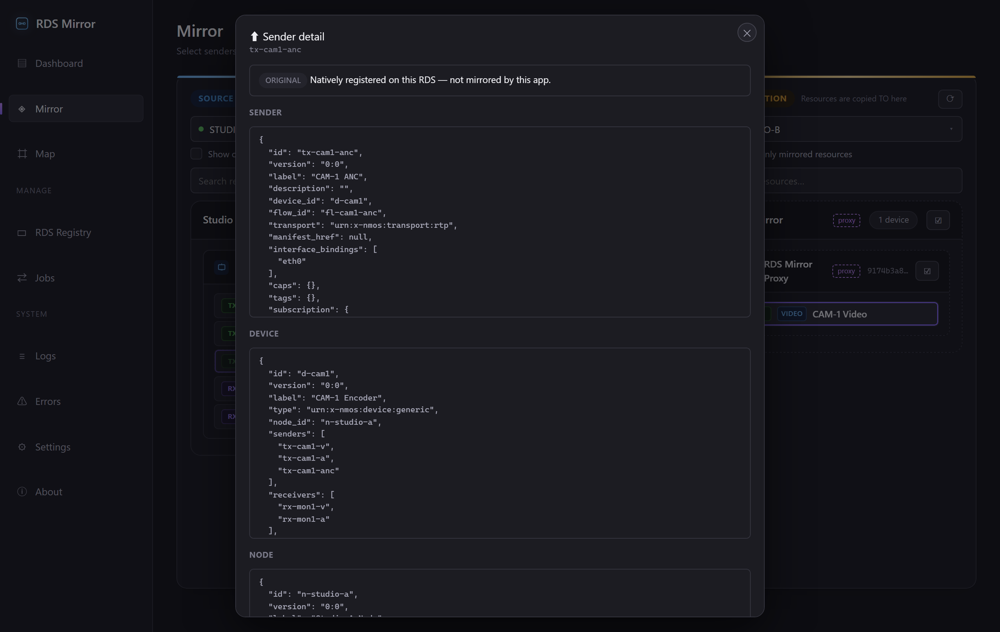
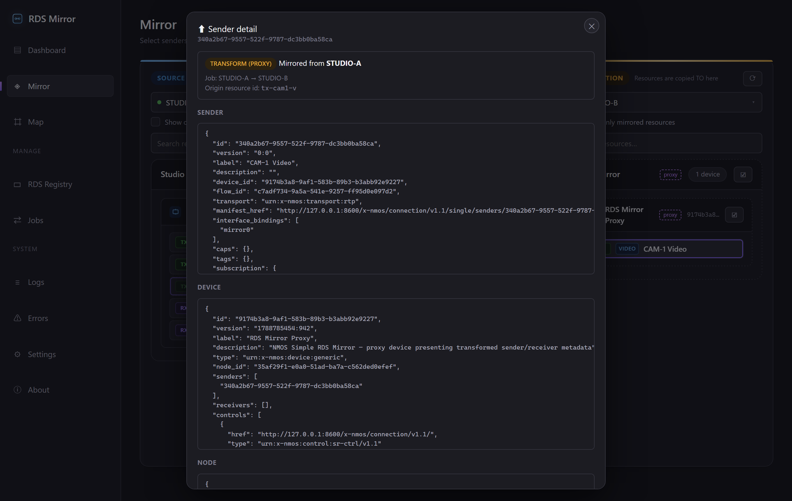
Flow 06 — Chain-mirror guard / Jobs
ミラーされてきたリソースを、さらに別のRDSへミラーしようとするとどうなるか。既定では連鎖ミラーはブロックされ、行・デバイス・ノードの各階層に「mirrored-in」「chain blocked」の印が付き、選択しようとすると理由を説明するトーストが出ます(Settingsの「Allow chain mirroring」でオンに変更可能)。Jobsページでは、動いている各ジョブの状態(有効/無効・ハートビート・リソース数)をまとめて確認できます。
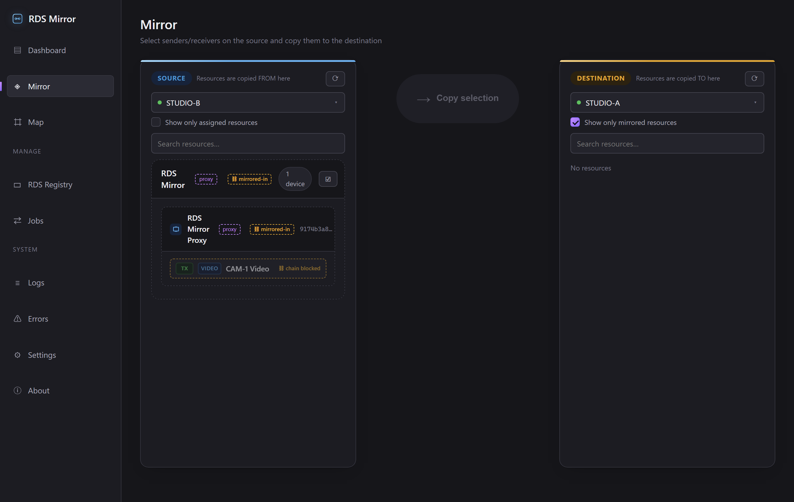
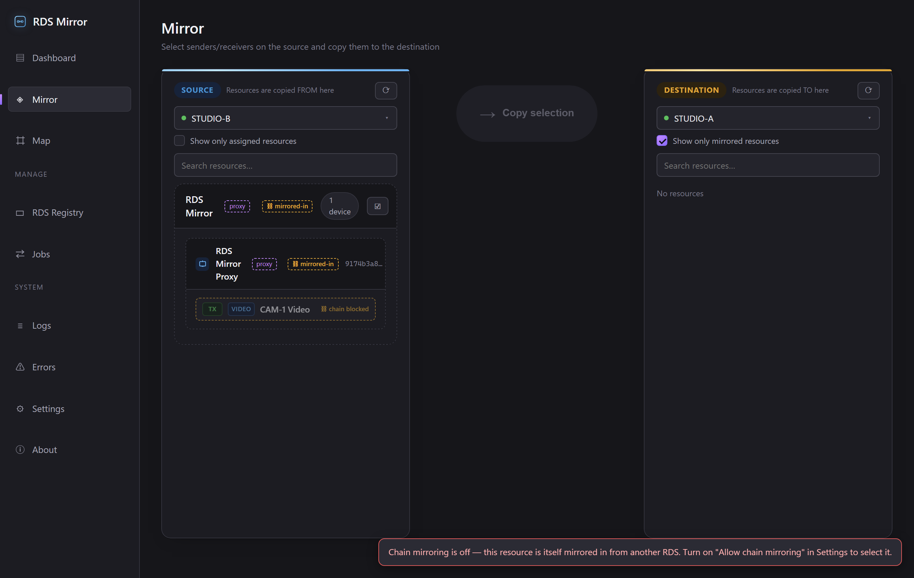
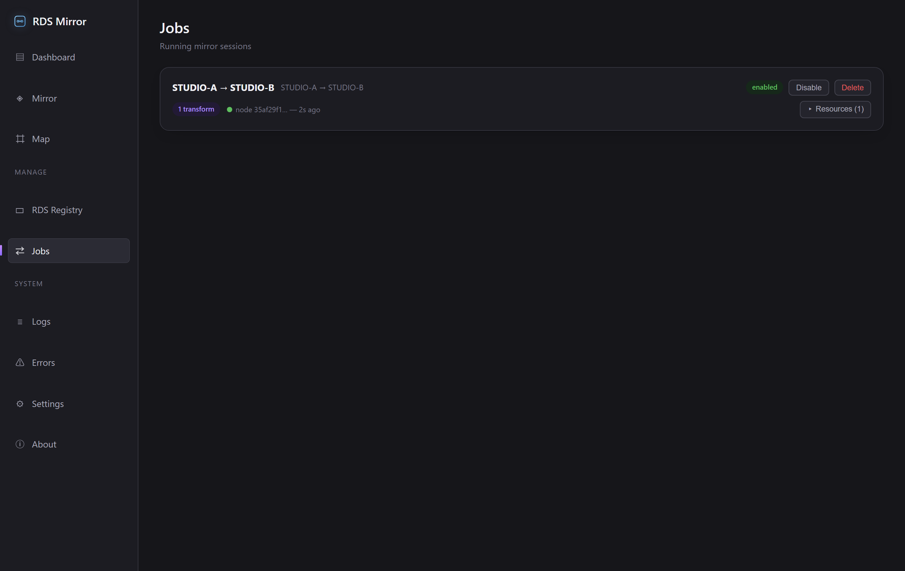